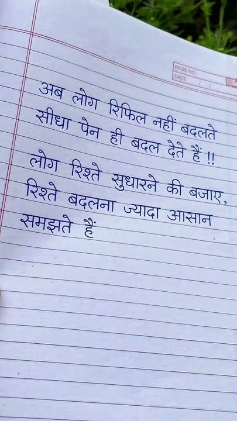

File: hin_sample_22.jpg

दि ॥ . — a सीधा ५ फिल नह - की बदल देते है. मल बज ज्यादा =
ee | पा SEY GPS OTe. [ = : झा | ४ <a all a “ ees oe SSS os a 5२56८ af See SSS [ihe oR ae oS aS eS [8 ey es eae = ES IP [ish SS 3 कन्सा धारण की जज =e pees oe Re कीखबजाए = So oe Te, = ia SUS 505 = 2 pr) ee reece De कलिनन सन य ee EY TE a Se न 2-3 5० : oo ne ee Ls ici) a a =
अब लोग रिफिल सीधा नहीं बदलते पेन लोग रिश्ते सुधारने बजाए बदलना आसान समझते
❌ OCR Failed
१४८ॢ
गे। अब जोग सीघा पैन रिफिल नहीं बदलते ही बदत दैटे जोग रिश्ते रिश्ते सुधारने दे बजाप षदलना ज्यादा आसान समझते हैं
मब्लोग मौधा लोग रिफिलनहीं रिफिल मोग पेनीं पेन ही बढल नहीं ठेे बढलते हैं रिश्त बदलना रिश्ते सुधारने की बजा समझत समझते हं ज्यादा आसान